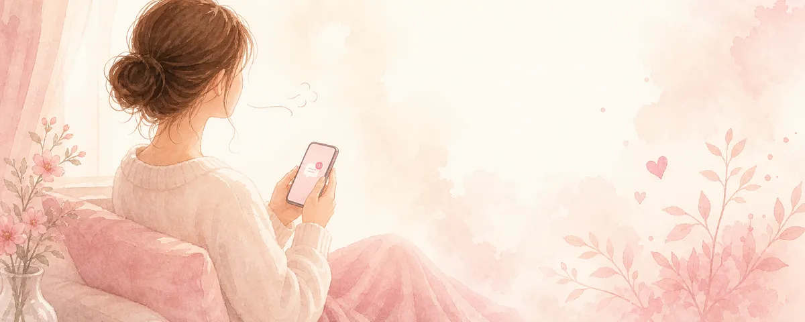

好きな人からLINEの返信が来ない・遅いとき｜不安との付き合い方と次の一手

送ったLINEに返事がない。既読もつかない。スマホばかり見て、他のことが手につかない——。返信を待つ時間は、本当に落ち着かないですよね。まず、その不安をやわらげるところから一緒に。
返信が来ない＝嫌われた、ではない
返事がないとき、私たちは最悪を想像しがちです。でも「返信がない」は事実で、「嫌われた」「脈なし」は、まだ確かめられていない解釈です。実際には、忙しい・通知を見落とした・どう返すか考えている、ということも珍しくありません。事実と想像を切り分けるだけで、心の波が少し穏やかになります。
「追いLINE」をしたくなったら、いったん止まる
不安なときほど「大丈夫？」「怒ってる？」と続けて送りたくなります。けれど、返信のペースは相手の都合でもあります。立て続けの連絡は、相手に「重い」と感じさせ、かえって距離を広げてしまうことが多いもの。送るのは一度にとどめ、あとは相手の返答を待つ——これが結果的にいちばん効きます。
不安は、相手以外の場所で受けとめる
「返信が来ない不安」を相手にぶつけると関係が消耗します。代わりに、信頼できる人に話す・気持ちを書き出す・別のことに没頭する。不安のケアと、相手への連絡は分けて考えるのがコツです。スマホを見る回数を意識的に減らすだけでも、ずいぶん楽になります。
送るか・待つか、迷ったときの考え方
「もう一度送るべき？」と迷ったら、目的を確かめてみてください。相手の反応をコントロールするためではなく、自分が誠実に伝えたいことがあるか。あるなら一度だけ、なければ待つ。どちらを選んでも、結果は相手に委ねる——その姿勢が、自分の心も守ります。
返信のペースは人それぞれ
毎回すぐ返す人もいれば、まとめて返す人もいます。返信の速さ＝好意の大きさ、ではありません。相手のペースを責めるより、「自分はどのくらいの頻度なら心地よいか」を知っておくと、合う相手かどうかも見えてきます。
「送るべき？待つべき？」——堂々めぐりになったら、声に出して整理すると早いです。
あなたの気持ちに寄り添いながら、現実的に次の一手を考えます。
※本記事は一般的な情報提供です。相手の気持ちや結果を保証するものではありません。
← トップへ戻る